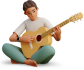

<section class="about" id="about">
  <div class="container">
    <h2 class="about__title">
      О центре, наставниках,<br>учениках и любви к делу
    </h2>
    <div class="about__desc">
      Комплексный центр развития детей и взрослых в Иваново, открывший свои двери в августе 2014 года. Сегодня, в стенах
      центра занимаются более 350 учеников в месяц, а общее количество за годы работы превысило 8000 человек.
      Индивидуальные и групповые занятия, мастер–классы и отчетные концерты, присоединяйтесь.
    </div>

    <ul class="about__list">
      <li class="about__item">

        <div class="about__top">
          <div class="about__img">
            <picture>
              <source media="(min-width: 1200px)" type="image/webp" srcset="../../img/atmosphere@desktop.webp">
              <source media="(min-width: 1200px)" srcset="../../img/atmosphere@desktop.png">
              <source type="image/webp" srcset="../../img/atmosphere@mobile.webp">
              
            </picture>


          </div>
          <h3 class="about__subtitle">Атмосфера</h3>
        </div>

        <div class="about__subdesc">Особое место с уютной атмосферой, где дети и взрослые совершенствуют свои навыки.
          Комьюнити креативных ребят. Пространно, где ученики с наставниками реализуют свои творческие амбиции и
          мечты.</div>

      </li>
      <li class="about__item">

        <div class="about__top">
          <div class="about__img">
            <picture>
              <source media="(min-width: 1200px)" type="image/webp" srcset="../../img/approach@desktop.webp">
              <source media="(min-width: 1200px)" srcset="../../img/approach@desktop.png">
              <source type="image/webp" srcset="../../img/approach@mobile.webp">
              
            </picture>


          </div>
          <h3 class="about__subtitle">Подход</h3>
        </div>
        <div class="about__subdesc">В качестве образовательного подхода мы используем концепцию Learner-centered или
          ученикоориентированный подход. Это позволяет формировать образовательные цели, учитывая потребности и
          интересы учащихся.</div>

      </li>
      <li class="about__item">

        <div class="about__top">
          <div class="about__img">
            <picture>
              <source media="(min-width: 1200px)" type="image/webp" srcset="../../img/results@desktop.webp">
              <source media="(min-width: 1200px)" srcset="../../img/results@desktop.png">
              <source type="image/webp" srcset="../../img/results@mobile.webp">
              
            </picture>


          </div>
          <h3 class="about__subtitle">Результаты</h3>
        </div>
        <div class="about__subdesc">Организуя творческие мероприятия, ежегодные отчетные концерты мы предоставляем
          ученикам возможность продемонстрировать свои достижения, которых они добились в процессе обучения в центре.
        </div>
      </li>
    </ul>
  </div>
</section>
